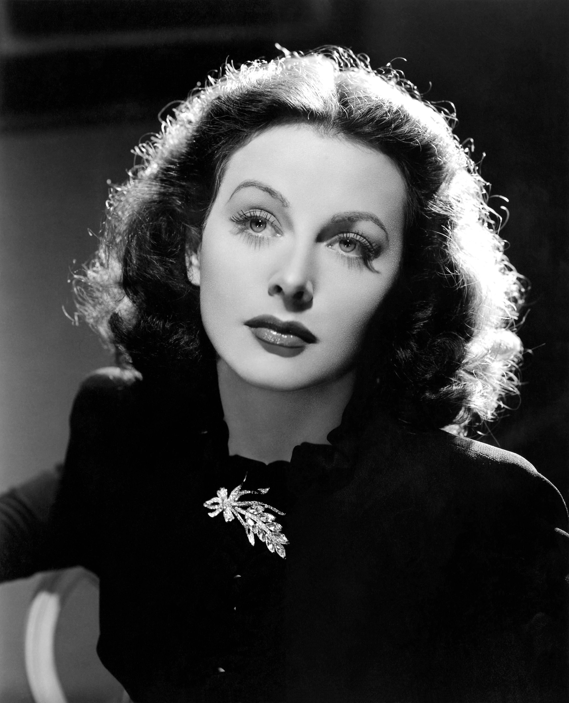

Введение

Хедвиг Ева Мария Кислер родилась 9 ноября 1914 года в Вене и была единственным ребёнком управляющего банком Эмиля Кислера (1880—1935), родом из Львова, и его жены Гертруды Кислер (дев. Лихтвиц; 1894—1977), пианистки из богатой будапештской еврейской семьи.
В шестнадцать лет Хедвига ушла из дома, поступила в театральную школу и начала сниматься в кино, дебютировав в немецко-австрийском фильме «Деньги на улице» (1930). Режиссер Макс Райнхардт назвал Хеди самой красивой женщиной в Европе. В том же году актриса была приглашена в Берлин Максом Рейнхардтом. Мировую известность ей принёс чехословацко-австрийский фильм Густава Махаты «Экстаз» (1933, роль Евы). Десятиминутная сцена купания обнажённой девушки в лесном озере, вполне невинная по меркам XXI века, в 1933 году вызвала бурю эмоций. Картину запретили к показу в ряде стран, с цензурными купюрами она была выпущена в прокат лишь через несколько лет. В том же году Хедвига вышла замуж за фабриканта оружия, австрийского миллионера Фрица Мандля, который впоследствии пытался выкупить из венского проката все копии фильма «Экстаз»
За свою голливудскую карьеру актриса сыграла в таких популярных фильмах, как «Алжир» (1938, роль Габи), «Леди из тропиков» (1939, роль Манон де Верне), «Квартал Тортилья-Флэтт» (1942, экранизация романа Дж. Стейнбека, реж. Виктор Флеминг, роль Долорес Рамирес), «Рискованный эксперимент» (1944), «Странная женщина» (1946) и «Самсон и Далила» (1949, эпическая лента Сесиля де Милля). Последнее появление на экране — в фильме «Самка» (1958, роль Ванессы Виндзор). В общей сложности она заработала на киносъёмках тридцать миллионов долларов.
Любая девушка может быть обворожительной. Все, что нужно, это стоять смирно и выглядеть глупенькой. Хеди Ламарр